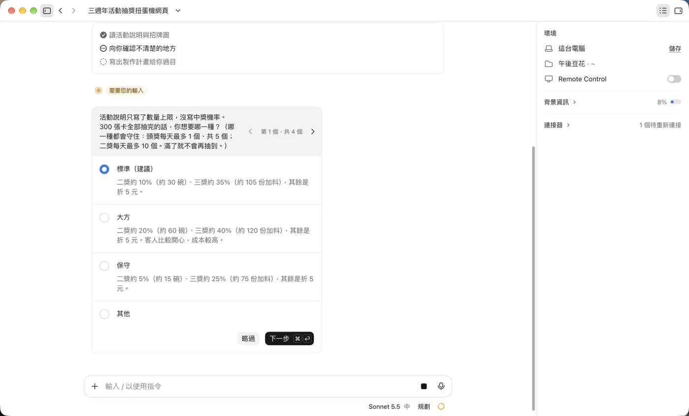
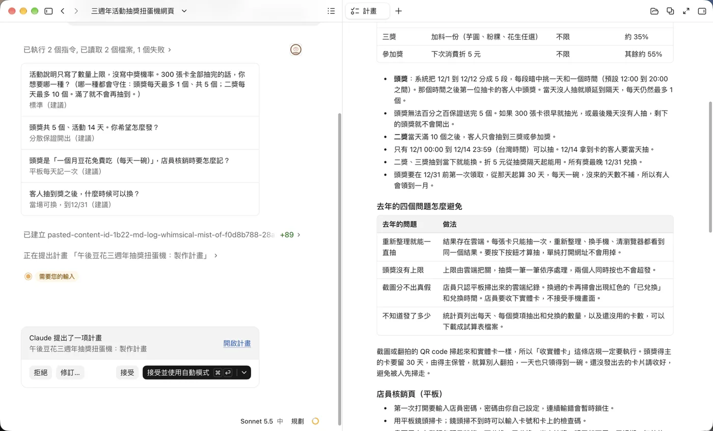
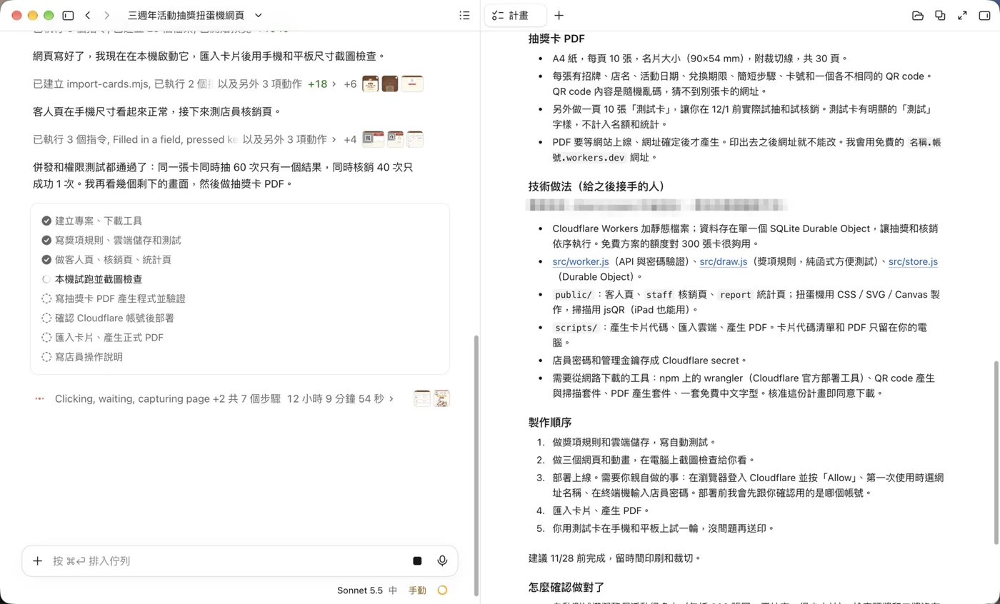
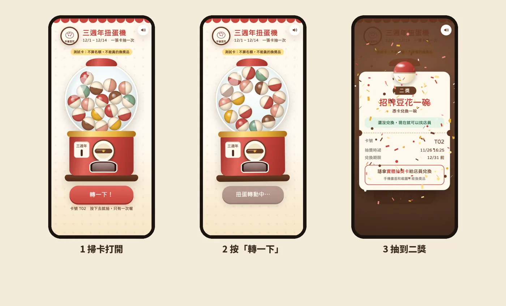
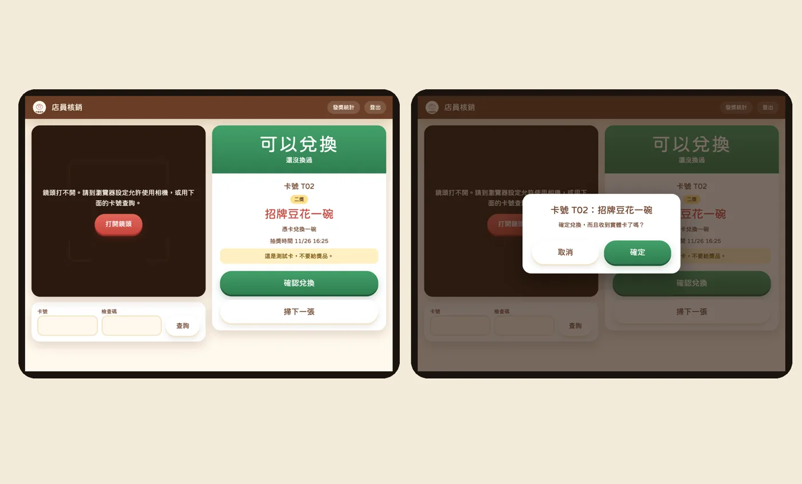
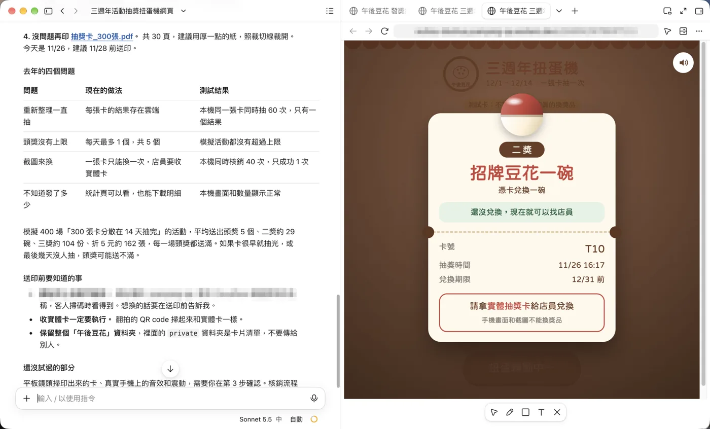

店家自己的扭蛋機：一張卡只能抽一次
午後豆花（虛構）要辦三週年活動：買滿 100 元送一張抽獎卡，客人用手機掃卡上的 QR code 抽獎。去年用免費的抽獎網頁，遇到四個問題：再載入一次就能一直抽、頭獎沒有上限、客人拿截圖來換、活動結束不知道發了多少。這一課請 Claude Code 做一台有店家招牌的扭蛋機網頁、300 張每張都不一樣的抽獎卡，和一個店員核銷頁，最後放上網。不會的，就問 Claude。
看不到影片？到 YouTube 觀看。三十秒精華在 AI 實戰短片播放清單。
A｜先把規則說清楚：規劃模式
- 開一個資料夾，放兩樣東西：活動說明（獎品、數量、期限、去年遇到的問題、店裡的狀況）和店的招牌圖。可以參考示範用的活動說明。
- 打開電腦版 Claude 的 Code 分頁，選這個資料夾，輸入框下面的模式選 規劃（Day 8 教過：只看、只想、只寫計畫，不動檔案）。
- 貼上下面這段。
它沒有馬上動手，先問了四個只有店家能決定的問題：中獎機率要大方還是保守、頭獎要分散在不同天開出還是看運氣、頭獎「一個月免費吃」店員要怎麼記、抽到之後什麼時候可以換。每一題都附建議，選好按提交。

然後它寫出計畫，還有一張表把去年的四個問題一個一個對上做法。看懂了再按接受，它才開始動手。

B｜結果放在雲端：前端、後端
免費抽獎網頁為什麼再載入一次就能一直抽？因為抽獎是在客人的手機上算的。客人手機上看到的畫面叫前端；真正抽獎、記錄每張卡抽過沒有、今天頭獎剩幾個，放在雲端的伺服器上做，叫後端。結果存在後端，換手機、清瀏覽器、再載入，看到的都是同一個結果。
程式寫好，它要在你的電腦上先跑起來看，跑之前會跳出「是否允許」的詢問。允許還是拒絕，由你自己按。它還自己測了「同時」的情況：

C｜一張卡一次
它做了 300 張抽獎卡（A4 一頁 10 張、名片大小，附裁切線），每張的 QR code 是一串隨機代碼，猜不到別人的卡；另外 10 張「測試卡」給活動前試抽、試核銷，不算正式名額。

| 獎項 | 內容 | 上限 |
|---|---|---|
| 頭獎 | 一個月豆花免費吃（每天一碗） | 每天 1 個、共 5 個，系統事先分散在不同天 |
| 二獎 | 招牌豆花一碗 | 每天 10 個 |
| 三獎 | 加料一份 | 不限 |
| 參加獎 | 下次消費折 5 元 | 不限 |
D｜放上網，交給店員
部署前它先問：要放到這台電腦登入的 Cloudflare 帳號嗎？卡印好之後網址就不能改。確定之後它把網站放到 Cloudflare Workers（免費方案，300 張卡的用量綽綽有餘），再用正式網址產生抽獎卡 PDF。卡要等網址確定才能印。

最後它交一份總結：去年的四個問題、現在的做法、每一項的測試結果，還模擬了 400 場活動確認獎品不會發過頭。另外寫了一份店員操作說明，可以印出來放櫃台。

送印前：店員密碼要你自己在終端機設定；用測試卡在手機和平板上試一輪；實體卡收好，不要放在客人拍得到的地方。
今天的作業
寫一份活動說明
獎品、各有幾個、期限，還有你最怕發生的事。
用規劃模式交給 Claude Code
它問什麼就答什麼，看懂計畫再按接受。要在你電腦上跑程式、要放上網，它都會先問，允許還是拒絕你自己按。
先在自己電腦上試
用測試卡抽幾次、核銷幾次，確定沒問題再放上網、再印卡。卡住了，就把畫面截圖問 Claude。
下一課：Day 16，三個月的 LINE 對話，變成一張需求變更清單。
官方來源
資料查證日期：2026 年 11 月 26 日。午後豆花、獎品、抽獎卡都是示範用的假資料，示範網站拍完已關閉。畫面是用付費帳號、電腦版 Claude 實際操作的樣子。